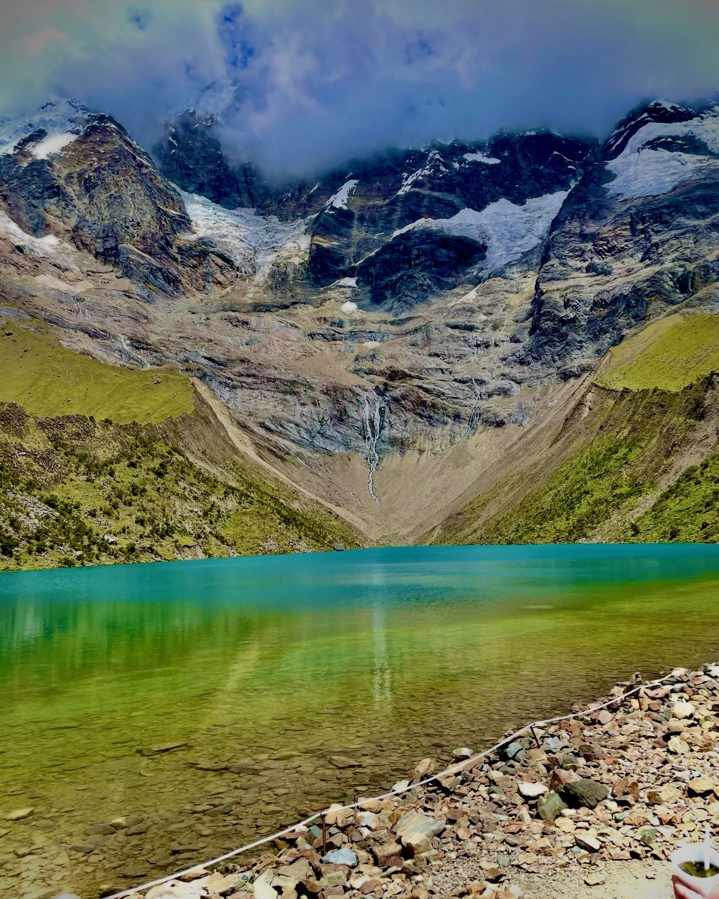

Hay personas que viajan para escapar de su vida y otras que viajan porque descubrieron que su vida cabe en menos espacio del que les habían dicho. Juan Antonio Núñez pertenece, sospecho, a una tercera categoría: viaja porque quedarse quieto demasiado tiempo le impide investigar.
Ahora vive en una Volkswagen Transporter de 2013 que alguna vez circuló en Chile y que hoy es al mismo tiempo casa, vehículo, taller, oficina y problema mecánico recurrente. La van tiene casi un cuarto de millón de kilómetros, un refrigerador que ha decidido convertir el voltaje en tema de conversación, una instalación eléctrica que todavía admite varias mejoras y una segunda velocidad con ciertas opiniones propias sobre cuándo debe entrar. Para mucha gente, todo esto sería una colección de inconvenientes. Para Juan es material de estudio.

Puede pasar de preguntarse por qué una batería cae a seis voltios cuando arranca el compresor a investigar cómo funcionaba el poder político en el Perú del siglo XIX. Después quiere saber qué foco exacto utiliza una Transporter T5.1, qué banco guatemalteco cobra menos por sacar quetzales con una tarjeta mexicana o qué decía realmente Pablo de Tarso sobre obedecer a las autoridades. Si una respuesta empieza con «probablemente», su siguiente pregunta suele ser por qué estamos suponiendo.
Es ingeniero en sistemas computacionales y estudió también Relaciones Internacionales, combinación menos extraña de lo que parece cuando uno conversa con él durante suficiente tiempo. Ambas disciplinas comparten una obsesión: los sistemas. Quién tiene poder, qué reglas lo distribuyen, dónde está la dependencia, qué ocurre cuando falla una pieza. Lo mismo puede aplicarse a un Estado que a una empresa, a una campaña política que a un circuito de 12 voltios.
En algún momento de su vida profesional programó. También administró empresas, coordinó proyectos y terminó haciendo buena parte de las cosas que aparecen cuando una organización descubre que necesita a alguien capaz de entender un problema antes de decidir a quién le corresponde resolverlo. Esa clase de trayectoria produce currículos incómodos. No cabe limpiamente bajo una sola etiqueta. Programador es cierto. Project manager también. Administrador, editor, operador digital, productor de contenido: también.
Quizá por eso parece tener poca paciencia con la liturgia profesional que obliga a una persona a escoger una sola identidad y representarla durante cuarenta años.
Su proyecto actual es bastante más concreto: encontrar la manera de vivir trabajando desde cualquier lugar.
No es una fantasía especialmente novedosa. Internet está lleno de gente que vende la palabra «nómada» acompañada de una computadora frente a una playa. La versión de Juan tiene menos palmeras y bastante más Excel. Hay clientes, horas facturables, páginas web, edición de podcasts, reels, captions, automatizaciones, facturas y cálculos sobre cuántos clientes mensuales hacen falta para convertir una intención en un ingreso.
También hay una van.

Forma parte de ese proyecto de vida móvil, y ahora Juan y Kat avanzan por Centroamérica a una velocidad determinada tanto por las carreteras como por la mecánica. Han pasado por México y Guatemala; últimamente el paisaje es el lago Atitlán, con San Marcos como una de esas bases temporales que dejan de parecer vacaciones en cuanto uno tiene que preocuparse por agua, electricidad, internet, ropa limpia y dónde estacionar.
Esa diferencia importa.
El turista pregunta qué hay que ver en Panajachel. Juan pregunta también dónde está el cajero BAC, cuánto cobra, dónde compran ropa quienes viven allí y a qué distancia de la calle Santander empiezan a bajar los precios.
Hay algo casi antropológico en esa forma de viajar. Las ciudades dejan de ser colecciones de monumentos y aparecen como sistemas cotidianos: dónde compra la gente, cuánto cuesta comer, cómo se mueve el dinero, quién acepta tarjeta, dónde se repara un coche, qué barrios conviene evitar. No se trata exactamente de vivir como un local —frase que los viajeros han desgastado hasta volverla publicidad— sino de descubrir cómo funciona un lugar cuando uno necesita utilizarlo.
De allí nace Taco Viajero, su proyecto de viajes, aunque incluso ese nombre cuenta sólo una parte. Juan toma fotografías, escribe reseñas muy largas para Google Maps y tiene la peculiar costumbre de registrar detalles que casi ninguna guía considera importantes: si aceptan tarjeta, si cobran comisión, cuánto tarda el servicio, qué tal están los baños, cuánto ruido hay.
Esto podría parecer excesivo hasta el día en que uno necesita precisamente uno de esos datos.

También graba. Mucho.
Tiene la idea de producir dos versiones de los lugares que recorre. Una casi sin intervención: una cámara quieta frente al lago, horas de pájaros, viento, agua y vida pasando delante del objetivo. La otra requiere narración, contexto y edición. Durante un tiempo pueden parecer proyectos opuestos. En realidad revelan las dos maneras en que mira casi todo: primero observar; después explicar.
La política ocupa el otro extremo de ese mismo impulso.
Puede hablar durante horas sobre historia, administración pública, relaciones internacionales o las pequeñas contradicciones que sobreviven debajo de los grandes relatos nacionales. No parece interesarle demasiado llegar rápidamente a la opinión correcta. Le interesa desmontar el mecanismo. Quién decidió. Qué incentivos tenía. Qué documento lo prueba. En qué año ocurrió. Qué parte estamos repitiendo porque alguien más la repitió antes.
Eso explica también cierta impaciencia con las respuestas imprecisas.
«No sé» le parece una respuesta perfectamente respetable.
Lo que le molesta es recibir una conjetura disfrazada de certeza.
En tiempos en que buena parte de nuestra conversación pública consiste exactamente en eso, la distinción no es menor.
Hay contradicciones, por supuesto. Juan quiere libertad geográfica, pero construye sistemas. Quiere viajar sin demasiados planes, pero puede investigar durante horas qué módem utiliza determinadas bandas LTE antes de comprarlo. Busca reducir sus pertenencias y simultáneamente convierte una furgoneta en un pequeño laboratorio tecnológico. Le interesa la espontaneidad y registra sus horas de trabajo hasta el minuto.
No parecen contradicciones que necesite resolver.
Quizá son el método.

La libertad, para ciertas personas, consiste en no tener estructura. Para otras consiste en construir la suficiente para que el resto pueda improvisarse.
Juan pertenece claramente a las segundas.
Por eso su historia todavía no ofrece ese arco impecable que suelen exigir los perfiles. No abandonó una oficina para hacerse millonario viajando. No encontró una fórmula secreta de ingresos pasivos. No convirtió todavía sus canales de YouTube en una empresa mediática. Está haciendo algo menos espectacular y probablemente más difícil: intentando convertir una acumulación extraña de habilidades en una forma sostenible de vida.
Programa cuando hace falta. Edita. Administra. Investiga. Escribe. Graba. Repara lo que puede. Aprende lo que no sabe.
Y sigue avanzando.
Algún día, quizá, alguien consiga resumir todo eso con un cargo profesional suficientemente elegante. Por ahora me parece más exacta otra descripción.
Juan Antonio Núñez es el tipo de persona que llega a un lugar nuevo, mira alrededor y tarde o temprano hace la misma pregunta:
¿Cómo funciona esto?